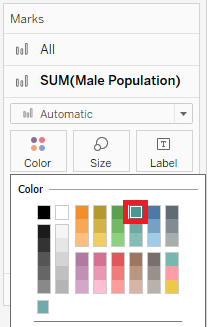
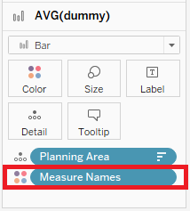
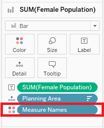
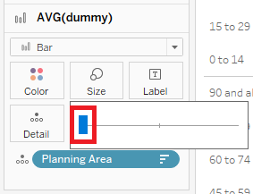

Take-Home Exercise 1
The following is my submission for Take-Home Exercise 1.
Dataset
The dataset used in this take-home exercise was downloaded from the following link, below the sub-section of Population Trends: https://www.singstat.gov.sg/find-data/search-by-theme/population/geographic-distribution/latest-data
In my case, I have selected the Singapore Residents by Planning Area / Subzone, Age Group, Sex and Floor Area of Residence, June 2022.csv option. A zip folder will be downloaded. Upon unzipping the folder, there are two files that are contained in this unzipped folder; one for the raw dataset and one for the notes of the dataset (similar to a readme file).
Unzipped folder:
Dataset:

Notes of Dataset:

Preparation Steps
Now, let’s bring in this raw dataset to Tableau Desktop for our analysis. Please find below a reproducible description of the procedures used to prepare and create the analytical visualization in Tableau Desktop.
| # | Step | Screenshot |
|---|---|---|
| 1 | In Tableau Desktop, in the Data Source pane, click on “Text file” (since we are dealing with a csv file and not an excel file). When the popup prompts you to choose a file, click on the raw dataset. |
|
| 2 | Once the raw dataset is loaded, note that the data source name and field names are not that meaningful. Let’s first change the data source name to: Planning Area - Jun 2022. Let’s also change the field names according to the Notes of Dataset file that was in the unzipped folder. |
|
| 3 | Once the field names are updated, notice that the field Time is identified to be a numerical field. However, this is supposed to reflect the Year of the record. Hence, let’s change this field’s datatype to Date. | |
| 4 | In our task, we want to plot the male population and female population against their age groups. For this, let’s create two calculated fields to distinguish the populations by gender. Create a calculated field for Male Population (where Sex is “Males”). Likewise, create a calculated field for Female Population (where Sex is “Females”). |
|
| 5 | Notice that the values in the Age Group field are in bins of 5. Let’s group these values into bins of 15 to simplify our analysis. Right click on the Age Group field and click on “Create Group…”. Let’s create the following groupings to create age groups with bins of 15. |
|
| 6 | In our task, it is stated that we only show 9 planning areas in a view. So, to reduce the size of the data that we load, let’s filter the data source to only keep 9 planning areas in the data. Click on “Add” to add a new data source filter. In the Data Source Filters popup, click on “Add” to add a new filter for the Planning Area field. Once you click on “Ok”, you will be prompted in a popup to choose which values in the Planning Area field you want to keep in the view. Select the tab “Top”, and the radio button “By field” to choose the Top 9 by Population Sum. This will filter the data to only show the top 9 planning areas which have the highest population. Click on “Ok” to close the popup. Notice that the Data Source Filters popup, there is a new row stating that Planning Area keeps 9 of 55 members. This indicates that our filter is successfully applied. Click on “Ok” to close the Data Source Filters popup. Notice now that the upper right hand corner indicates that there is one filter being applied to the data source. |
|
| 7 | Now, let’s build the visualization in “Sheet 1”. To set the base for our visualization, which is going to be a 3x3 matrix, let’s create two calculated fields; one for columns and one for rows. Drag Columns and Rows fields to the Column and Row panes respectively. Your view will look like a quadrant. Let’s switch the Columns and Rows fields from Continuous to Discrete. Your view will be updated to a table. |
|
| 8 | Now, let’s drag the two calculated fields we created (Male Population & Female Population) to the Columns pane and the Age Group (Group) field to the Rows pane. Notice now that we have two bar charts - one for male population and one for female population, for each age group in our dataset. | |
| 9 | Let’s convert our bar charts for the genders into a pyramid-like view by editing the axis for the Male Population field. Right click on the axis for Male Population field and select “Edit Axis”. In the popup, under the section “Scale”, tick the check-box for “Reversed” to reverse the axis for the Male Population field. Now, if you close this popup, you will notice that the divider between the two bar charts indicates that the axis starts from 0K. |
|
| 10 | Now that we have a pyramid-like view for the age-sex breakdown, let’s bring in the planning area information by dragging the field Planning Area into the Details section of the All marks card. | |
| 11 | Let’s update how the calculated fields Columns and Rows are computed - which should be based on the Planning Area field. Notice now that the view has been updated to a 3x3 matrix. |
|
| 12 | To distinguish between the two genders in our view, let’s color the bars accordingly. In the marks card for Male Population field, change the color to teal. Similarly, in the marks card for Female Population field, change the color to red. Now, we can clearly distinguish between the Male and Female bars in our view. |

|
| 13 | Now, let’s do some formatting to the view starting with how the view is displayed. Let’s change the view from”Standard” to “Entire View” to spread out our display. |
|
| 14 | Now we can view the full chart in the view. However, it still looks cluttered. Let’s remove the axis headers for both Male Population and Female Population fields. Right click on the axis header and un-check “Show Header” for either of the axis. This will remove the axis header in our chart. Let’s also remove the header for the Row and Columns fields. Un-check “Show Header” for both these fields. |
|
| 15 | Let’s format the bars in the view now. Under the marks card for All, drag the slider to reduce the size of the bars till the recommended size (indicated by a pipe). |  |
| 16 | Notice that there are many grid lines in our chart which makes the view cluttered. To format grid line, right click on the view and select the “Format” option. In the format panel, click on the icon for grid lines. Under the tab “Columns”, set Grid Lines to None. Notice now that the view looks much cleaner. |
  |
| 17 | Let’s include the text labels by including the relevant fields in the label section of the marks card. For the male population marks card, let’s drag the SUM(Male Population) field to the label section. To format this text label, right click on the SUM(Male Population) field in the marks card and click on “Format”. In the format panel, click on “Pane”. Under the “Numbers” option, select “Custom”. Change the number of decimal places to 0 and the display units to thousands. Repeat the same steps for the SUM(Female Population) field. |
|
| 18 | Notice that the y-axis, Age Group (Group) field is sorted by default. Let’s switch this to sort by descending order so that we can view the age group starting from the youngest age to the oldest age. Right click on Age Group (Group) field in the Rows pane and select “Sort”. In the popup, change the sort order to “Descending”. |
|
| 19 | Let’s also sort the x-axis, Planning Area field to be in descending order based on the sum of population. To do this, let’s right click the Planning Area field in the All marks card and select “Sort”. For the Planning Area field, let’s sort by Sum of Population in descending order. |
|
| 20 | Now, we have our 3x3 matrix of male and female population by their age groups in the top 9 planning areas by population. However, at one glance, we can’t say what are these top 9 planning areas. To bring the Planning Area field as a text label for this view, let’s create a dummy calculated field called dummy. This dummy field is being assigned the value of 40K for the age group of “90 and above”. The reason we choose this age group is because we want our text label to be shown on the same row as this age group value in our trellis chart. As for the value of 40K, I chose this because it is higher than those values in our trellis chart. |
|
| 21 | Bring this new calculated field, dummy, into the view on the Columns panel. Ensure that the dummy field is taking the AVG and not the SUM. Make this dummy field a dual axis with the Female Population field. Right click on the axis header for the dummy field and click on “Synchronize Axis”. |
|
| 22 | Now, let’s format this dummy field. We do not want any axis headers so let’s remove that first by un-checking “Show Header” after we right click on the dummy field’s axis header. Let’s also un-check “Show Header” for the Female Population field. |
|
| 23 | We also do not want any colored bars to be shown for the dummy field. Let’s remove the measure names field from the colors section in the marks card for both the dummy field and Female Population fields. |   |
| 24 | Let’s also reduce the size of the bars for the dummy field to the smallest possible size. |  |
| 25 | We shall also make the dummy field’s color to be completely opaque with no borders. | |
| 26 | Before adding the Planning Area field to the text section in the marks card for the dummy field, let’s also change the type or mark from “Bar” into “Circle”. Then, drag the Planning Area field into the text section in the marks card. |
|
| 27 | Let’s format the text label to be bigger, bold, as well as center-aligned. Now we have a clean and insightful view that is ready for analysis! |
|


Discussion of Analysis
The following section elaborates on the patterns revealed by the analytical visualization that was built using Tableau Desktop.
Here are the key points that we will be discussing:
- Top 10 Planning Areas
- xx
- zz
This concludes the work submitted for Take-Home Exercise 1. Thank you.